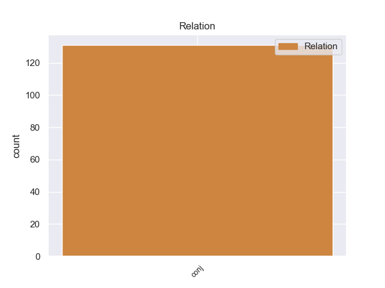
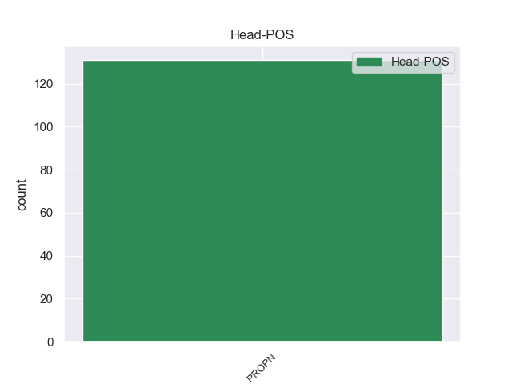
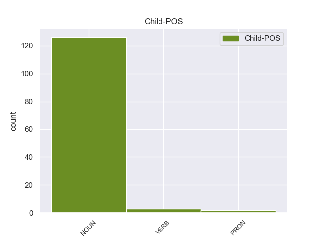

Distribution of features within this leaf



Agreement Rules sorted by frequency.
- When the dependent token is the conjunct(conj) of the head token, and the head token is PROPN and the dependent token is NOUN.
1 वोल्कर _ _ _ _ 0 _ _ _
2 से _ _ _ _ 0 _ _ _
3 यह _ _ _ _ 0 _ _ _
4 बातचीत _ _ _ _ 0 _ _ _
5 पिछले _ _ _ _ 0 _ _ _
6 बृहस्पतिवार _ _ _ _ 0 _ _ _
7 को _ _ _ _ 0 _ _ _
8 की _ _ _ _ 0 _ _ _
9 गई _ _ _ _ 0 _ _ _
10 थी _ _ _ _ 0 _ _ _
11 , _ _ _ _ 0 _ _ _
12 जिस _ _ _ _ 0 _ _ _
13 दिन _ _ _ _ 0 _ _ _
14 भारत _ _ _ _ 0 _ _ _
15 के _ _ _ _ 0 _ _ _
16 विदेश _ _ _ _ 0 _ _ _
17 मंत्री _ _ _ _ 0 _ _ _
18 नटवर _ _ _ _ 0 _ _ _
19 सिंह सिंह PROPN NNP Case=Acc|Gender=Masc|Number=Sing|Person=3 0 _ _ _
20 और _ _ _ _ 0 _ _ _
21 कांग्रेस _ _ _ _ 0 _ _ _
22 पार्टी पार्टी NOUN NN Case=Acc|Gender=Fem|Number=Sing|Person=3 19 conj _ ChunkId=NP8|ChunkType=head|Tam=0|Translit=pārṭī|Vib=0_का
23 का _ _ _ _ 0 _ _ _
24 नाम _ _ _ _ 0 _ _ _
25 आया _ _ _ _ 0 _ _ _
26 था _ _ _ _ 0 _ _ _
27 । _ _ _ _ 0 _ _ _
1 हत्यारों _ _ _ _ 0 _ _ _
2 की _ _ _ _ 0 _ _ _
3 तलाश _ _ _ _ 0 _ _ _
4 के _ _ _ _ 0 _ _ _
5 लिए _ _ _ _ 0 _ _ _
6 मोहम्मदपुर मोहम्मदपुर PROPN NNP Case=Acc|Gender=Masc|Number=Sing|Person=3 0 _ _ _
7 और _ _ _ _ 0 _ _ _
8 उसके वह PRON PRP Case=Acc,Gen|Number=Sing|Person=3|Poss=Yes|PronType=Prs 6 conj _ ChunkId=NP4|ChunkType=head|Tam=ke|Translit=usake|Vib=0_आसपास_का
9 आसपास _ _ _ _ 0 _ _ _
10 के _ _ _ _ 0 _ _ _
11 इलाकों _ _ _ _ 0 _ _ _
12 में _ _ _ _ 0 _ _ _
13 दबिश _ _ _ _ 0 _ _ _
14 दी _ _ _ _ 0 _ _ _
15 जा _ _ _ _ 0 _ _ _
16 रही _ _ _ _ 0 _ _ _
17 है _ _ _ _ 0 _ _ _
18 । _ _ _ _ 0 _ _ _
1 उनके _ _ _ _ 0 _ _ _
2 साथ _ _ _ _ 0 _ _ _
3 भाजपा _ _ _ _ 0 _ _ _
4 के _ _ _ _ 0 _ _ _
5 राष्ट्रीय _ _ _ _ 0 _ _ _
6 महासचिव _ _ _ _ 0 _ _ _
7 अनंतकुमार अनंतकुमार PROPN NNP Case=Nom|Gender=Masc|Number=Sing|Person=3 0 _ _ _
8 भी _ _ _ _ 0 _ _ _
9 थे _ _ _ _ 0 _ _ _
10 , _ _ _ _ 0 _ _ _
11 लेकिन _ _ _ _ 0 _ _ _
12 वह _ _ _ _ 0 _ _ _
13 इस _ _ _ _ 0 _ _ _
14 पथराव _ _ _ _ 0 _ _ _
15 में _ _ _ _ 0 _ _ _
16 बाल _ _ _ _ 0 _ _ _
17 बाल _ _ _ _ 0 _ _ _
18 बच बच VERB VM Number=Sing|Person=3|Polite=Form|Voice=Act 7 conj _ ChunkId=VGF2|ChunkType=head|Stype=declarative|Tam=0|Translit=baca|Vib=0_जा+या१
19 गए _ _ _ _ 0 _ _ _
20 । _ _ _ _ 0 _ _ _
Disagree Examples:
1 लक्ष्मीनारायण _ _ _ _ 0 _ _ _
2 मंदिर मंदिर PROPN NNP Case=Acc|Gender=Masc|Number=Sing|Person=3 0 _ _ _
3 और _ _ _ _ 0 _ _ _
4 राजमहल _ _ _ _ 0 _ _ _
5 की _ _ _ _ 0 _ _ _
6 दीवारें दीवार NOUN NN Case=Nom|Gender=Fem|Number=Plur|Person=3 2 conj _ ChunkId=NP3|ChunkType=head|Tam=0|Translit=dīvāreṁ|Vib=0
7 और _ _ _ _ 0 _ _ _
8 छतों _ _ _ _ 0 _ _ _
9 की _ _ _ _ 0 _ _ _
10 कलात्मकता _ _ _ _ 0 _ _ _
11 यहाँ _ _ _ _ 0 _ _ _
12 की _ _ _ _ 0 _ _ _
13 समृद्धि _ _ _ _ 0 _ _ _
14 की _ _ _ _ 0 _ _ _
15 कहानी _ _ _ _ 0 _ _ _
16 कहतीं _ _ _ _ 0 _ _ _
17 हैं _ _ _ _ 0 _ _ _
18 । _ _ _ _ 0 _ _ _
1 लक्ष्मीनारायण _ _ _ _ 0 _ _ _
2 मंदिर मंदिर PROPN NNP Case=Acc|Gender=Masc|Number=Sing|Person=3 0 _ _ _
3 और _ _ _ _ 0 _ _ _
4 राजमहल _ _ _ _ 0 _ _ _
5 की _ _ _ _ 0 _ _ _
6 दीवारें _ _ _ _ 0 _ _ _
7 और _ _ _ _ 0 _ _ _
8 छतों छत NOUN NN Case=Acc|Gender=Fem|Number=Plur|Person=3 2 conj _ ChunkId=NP4|ChunkType=head|Tam=0|Translit=chatoṁ|Vib=0_का
9 की _ _ _ _ 0 _ _ _
10 कलात्मकता _ _ _ _ 0 _ _ _
11 यहाँ _ _ _ _ 0 _ _ _
12 की _ _ _ _ 0 _ _ _
13 समृद्धि _ _ _ _ 0 _ _ _
14 की _ _ _ _ 0 _ _ _
15 कहानी _ _ _ _ 0 _ _ _
16 कहतीं _ _ _ _ 0 _ _ _
17 हैं _ _ _ _ 0 _ _ _
18 । _ _ _ _ 0 _ _ _
1 इन _ _ _ _ 0 _ _ _
2 तीनों _ _ _ _ 0 _ _ _
3 का _ _ _ _ 0 _ _ _
4 संबंध _ _ _ _ 0 _ _ _
5 राजस्थान _ _ _ _ 0 _ _ _
6 के _ _ _ _ 0 _ _ _
7 चित्तौड़ चित्तौड़ PROPN NNP Case=Acc|Gender=Masc|Number=Sing|Person=3 0 _ _ _
8 से _ _ _ _ 0 _ _ _
9 है _ _ _ _ 0 _ _ _
10 और _ _ _ _ 0 _ _ _
11 ये _ _ _ _ 0 _ _ _
12 तीनों _ _ _ _ 0 _ _ _
13 चित्तौड़ _ _ _ _ 0 _ _ _
14 के _ _ _ _ 0 _ _ _
15 किले _ _ _ _ 0 _ _ _
16 में _ _ _ _ 0 _ _ _
17 निवास _ _ _ _ 0 _ _ _
18 करते कर VERB VM Aspect=Imp|Gender=Masc|Number=Plur|VerbForm=Part|Voice=Act 7 conj _ ChunkId=VGF2|ChunkType=head|Stype=declarative|Tam=wA|Translit=karate|Vib=ता_था
19 थे _ _ _ _ 0 _ _ _
20 । _ _ _ _ 0 _ _ _
1 उन्होंने _ _ _ _ 0 _ _ _
2 कहा _ _ _ _ 0 _ _ _
3 , _ _ _ _ 0 _ _ _
4 हम _ _ _ _ 0 _ _ _
5 नई _ _ _ _ 0 _ _ _
6 तारीख _ _ _ _ 0 _ _ _
7 तय _ _ _ _ 0 _ _ _
8 करने _ _ _ _ 0 _ _ _
9 के _ _ _ _ 0 _ _ _
10 लिए _ _ _ _ 0 _ _ _
11 बंगलादेश बंगलादेश PROPN NNP Case=Acc|Gender=Masc|Number=Sing|Person=3 0 _ _ _
12 और _ _ _ _ 0 _ _ _
13 सार्क _ _ _ _ 0 _ _ _
14 देशों देश NOUN NN Case=Acc|Gender=Masc|Number=Plur|Person=3 11 conj _ ChunkId=NP5|ChunkType=head|Tam=0|Translit=deśoṁ|Vib=0_का
15 के _ _ _ _ 0 _ _ _
16 संपर्क _ _ _ _ 0 _ _ _
17 में _ _ _ _ 0 _ _ _
18 हैं _ _ _ _ 0 _ _ _
19 और _ _ _ _ 0 _ _ _
20 जल्दी _ _ _ _ 0 _ _ _
21 ही _ _ _ _ 0 _ _ _
22 इसके _ _ _ _ 0 _ _ _
23 तय _ _ _ _ 0 _ _ _
24 होने _ _ _ _ 0 _ _ _
25 की _ _ _ _ 0 _ _ _
26 उम्मीद _ _ _ _ 0 _ _ _
27 है _ _ _ _ 0 _ _ _
28 । _ _ _ _ 0 _ _ _
1 एफआईआई एफआईआई PROPN NNP Case=Acc|Gender=Masc|Number=Sing|Person=3 0 _ _ _
2 और _ _ _ _ 0 _ _ _
3 ऑपरेटरों ऑपरेटर NOUN NN Case=Acc|Gender=Masc|Number=Plur|Person=3 1 conj _ ChunkId=NP2|ChunkType=head|Tam=0|Translit=ôpareṭaroṁ|Vib=0_का
4 के _ _ _ _ 0 _ _ _
5 जोरदार _ _ _ _ 0 _ _ _
6 समर्थन _ _ _ _ 0 _ _ _
7 से _ _ _ _ 0 _ _ _
8 कारोबार _ _ _ _ 0 _ _ _
9 के _ _ _ _ 0 _ _ _
10 दौरान _ _ _ _ 0 _ _ _
11 एक _ _ _ _ 0 _ _ _
12 समय _ _ _ _ 0 _ _ _
13 बीएसई _ _ _ _ 0 _ _ _
14 का _ _ _ _ 0 _ _ _
15 सेंसेक्स _ _ _ _ 0 _ _ _
16 ८९१२.१२ _ _ _ _ 0 _ _ _
17 अंक _ _ _ _ 0 _ _ _
18 तक _ _ _ _ 0 _ _ _
19 चढ़ _ _ _ _ 0 _ _ _
20 गया _ _ _ _ 0 _ _ _
21 । _ _ _ _ 0 _ _ _